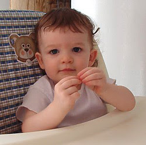

Communication between Young Infants and Care Givers
Young children learn better using Sign language. When it comes to young babies, who are newly learning their surroundings, most of the time it gets difficult to let others know what they are feeling or what their thought process is. They tend to outburst for every feeling (like hunger, sleep, sickness or sometimes poop in diapers). I have noticed in my personal experience that a child using sign language communicates better about their feelings.
I have noticed that the best place to observe if the baby is communicating enough is when they are eating. We would know how they are telling us that they are hungry, or they want more of their servings or they are done. I have always found the idea of teaching babies how to use their hands to communicate very fascinating. I believe my role is to teach them how to communicate in a better fashion.
In my personal experience, I learned that babies learn mostly by imitating their teachers. When they see their teacher using the same actions repeatedly, they tend to communicate in the same manner. When a child tries to push up themselves to stand, we tend to clap and cheer them. Eventually, when they stand up by themselves, the child knows that he did something that makes their teacher cheerful and claps all by himself. The child may feel shy to show off in their room, but most of them tend to show in front of their parents and in their family.